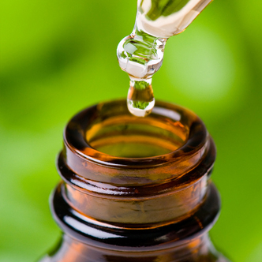

What is a Cannabis Tincture?

Cannabis tinctures, also known as green or golden dragon, are alcohol-based cannabis extracts - essentially, infused alcohol. In fact, tinctures were the main form of cannabis medicine until the United States enacted cannabis prohibition.
Tinctures are not new. Until cannabis was banned in 1937, tinctures were the primary type of cannabis medicines. Tinctures are essentially alcohol extractions of whole cannabis (usually the flowers and trim leaves).
With a name like “green dragon,” you might think cannabis tinctures are not for the faint of heart, but they’re actually a great entry point for both recreational and medical users looking to ease into smokeless consumption methods.